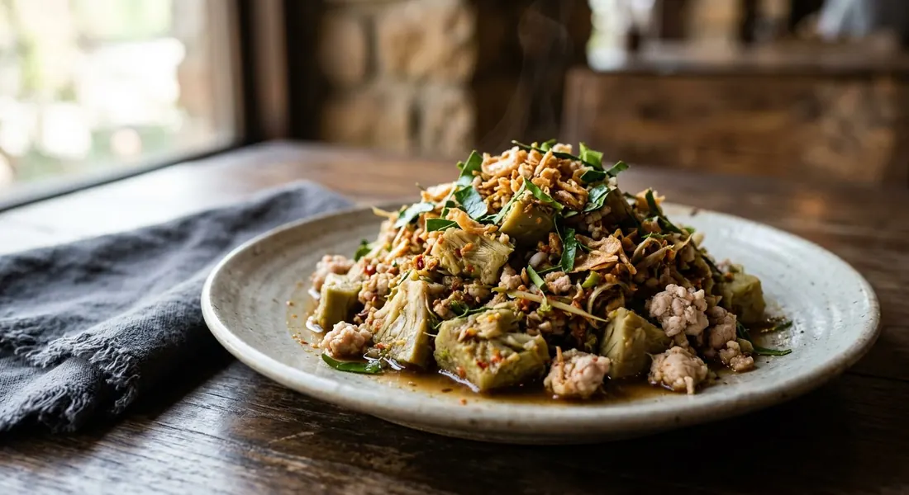

Young green jackfruit boiled soft, pounded with a northern chilli paste and fried with pork — meaty, spicy, and nothing like the ripe fruit in your dessert.

ยำขนุน is jackfruit's other life. Ripen it and it is the honey-sweet fruit of Thai desserts; pick it young and green, boil it, and the flesh turns dense and shreddy — a texture Krua's cooks describe as close to meat, which is why half of Thailand treats young jackfruit as a vegetable, not a fruit.
The name says ยำ — salad — but the north rarely tosses anything cold. Most Thai versions are built in a mortar and finished in a wok: the boiled jackfruit is ตำ, pounded with a paste of dried chillies, garlic, shallots, galangal and lemongrass, then fried with pork until it drinks the paste. Pantip's cook even posted it under the name ยำขนุน, and that is how northern restaurants print it — while the kitchen pounds.
Two things every source insists on. The core comes out — it is full of latex and bitter, and Krua adds the cook's trick of oiling the knife blade so the resin does not weld the cut closed. And the paste must be roasted or fried before it meets the jackfruit: Pantip roasts the aromatics before pounding, Wongnai fries the paste in garlic oil. At the end comes the finish — fried dried chillies, fried kaffir leaves, spring onion and coriander — and in the Lanna tradition, sticky rice and salt-fried pork belly alongside, a full northern meal Kapook calls the real thing.
| Thai | English | Amount |
|---|---|---|
| ขนุนอ่อน | Young green jackfruit | 400 g |
| หมูสับ | Minced pork | 100 g |
| พริกขี้หนูแห้ง | Dried bird's eye chillies | 15 |
| กระเทียม | Garlic | 1 tbsp |
| หอมแดง | Shallots | 5 |
| ข่าหั่น | Galangal, sliced | 1 tbsp |
| ตะไคร้ซอย | Lemongrass, sliced | 1 tbsp |
| กะปิ | Shrimp paste | 1 tsp |
| เกลือ | Salt | ½ tsp |
| ใบมะกรูดซอย | Kaffir lime leaves, shredded | 5–7 leaves |
| ต้นหอมซอย | Spring onion, sliced | 1 tbsp |
| ผักชีซอย | Coriander, sliced | 1 tbsp |
| พริกขี้หนูแห้งทอด | Fried dried bird's eye chillies | 7–8 |
| น้ำมันพืช | Vegetable oil | 2 tbsp |
The pla ra version (Kapook, isolateboy from Pantip): the same paste built on finely chopped fermented fish instead of shrimp paste, tomatoes crushed gently into the mortar at the end, fried with pork belly and finished with shredded kaffir leaves. The roasted version (Pantip): 1 kg jackfruit; the chillies, shallots, galangal and garlic roasted before pounding; the mix fried in rendered pork lard with 200 g pork belly, seasoned with fish sauce, sugar and seasoning powder, topped with fried chillies and fried kaffir leaves. The pan-cooked version (Krua): 500 g boiled jackfruit fried over low heat with garlic, spur chilli, 100 g prawns and 100 g pork loin for 10–15 minutes so the flavour soaks in, dressed with fish sauce, sugar and black pepper, finished with coriander, crushed roasted sesame and lime wedges. The Isan pohn khanun (TrueID): boiled jackfruit pounded coarse — deliberately chunky — dressed wet with pla ra water, fish sauce and MSG, served over rice or sticky rice with pork crackling.
The funk: shrimp paste or pla ra. Wongnai and Pantip build the paste on กะปิ, shrimp paste. Kapook's northern versions and TrueID's Isan pohn khanun build it on ปลาร้า, fermented fish — pounded into the paste or poured on as sauce. Same dish, two entirely different directions of funk.
Roast or raw aromatics. Pantip roasts the dried chillies, shallots, galangal and garlic before they hit the mortar. Wongnai and Kapook pound them raw and rely on the wok fry for the depth.
Pounded fine or chunky. Wongnai pounds the jackfruit fine until it is one mass. TrueID's author insists on the opposite — keep it coarse and chunky so the pla ra soaks into the pieces, not into a paste. Krua skips the mortar entirely and fries slices.
The meat. Minced pork in Wongnai; pork belly and rendered lard in Pantip and Kapook; prawns and sliced pork loin in Krua's pan version; no meat at all in TrueID's — it is eaten as a nam phrik-style dish with sticky rice and pork crackling.
Sour or not. The pounded northern versions have no lime anywhere — the seasoning is fish sauce, sugar and seasoning powder. Lime only appears in Kapook's น้ำพริกขนุนอ่อน (a lime-and-sugar dressing over the mortar-pounded jackfruit, no frying) and as wedges on the side of Krua's pan version. The 'yam' in the name is a menu word, not a guarantee of sourness.
Tomato in the mortar. Kapook crushes tomatoes into the pounded jackfruit — gently, the cook warns, or the juice splashes. None of the other versions use tomato.
This recipe is translated from the following Thai-language sources. Where they disagree, we've said so.
1. Wongnai — "สูตร ตำขนุนอ่อน" by poon4289 (the recipe used here) — wongnai.com
2. Kapook — "3 เมนูขนุนอ่อน อร่อยแซ่บพ่วงวิธีผ่าขนุนยางไม่ติดมีด" (the pla ra version from Pantip member isolateboy, plus the น้ำพริกขนุนอ่อน lime-dressed variant) — cooking.kapook.com
3. Kapook — "ตำขนุนกับหมูสามชั้นคั่วเค็ม อาหารพื้นบ้านล้านนารสเด็ด" (the Lanna meal: sticky rice and salt-fried pork belly) — cooking.kapook.com
4. Pantip — "ยำขนุน ตำขนุน สูตรอาหารเหนือ" (the roasted-aromatics version fried in lard) — pantip.com
5. TrueID Food — "แจกสูตร 'ขนุมป่นน้ำปลาร้า' อร่อยมากๆ แค่ทำง่ายๆ" (the Isan pohn khanun, coarse and wet with pla ra) — food.trueid.net
6. Krua.co — "ยำขนุนอ่อน" (the pan-cooked prawn-and-pork version and the knife-oiling and core-removal notes) — krua.co